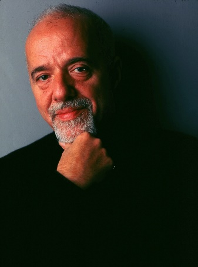

PAULO COELHO, 1947’de Brezilya’nın Rio de Janeiro kentinde doğdu. Kendini tümüyle edebiyata vermeden önce tiyatro yönetmenliği, oyunculuk, şarkı sözü yazarlığı ve gazetecilik yaptı. 1986’da yayımlanan Hac adlı ilk romanının ardından gelen Simyacı’yla dünya çapında üne erişti. Simyacı, XX. yüzyılın en önemli yayıncılık olaylarından biri oldu ve 85 milyon sattı. Coelho, Brida (1990), Piedra Irmağı’nın Kıyısında Oturdum Ağladım (1994), Beşinci Dağ (1996), Işığın Savaşçısının Elkitabı (1997), Veronika Ölmek İstiyor (1998), Şeytan ve Genç Kadın (2000), On Bir Dakika (2003), Zâhir (2005),Portobello Cadısı (2006), Kazanan Yalnızdır (2008), Elif (2011), Akra’da Bulunan Elyazması (2012), Aldatmak (2014) veCasus (2016) gibi yapıtlarıyla sürekli olarak çoksatar listelerinde yer aldı. Sosyal ağlarda en çok takipçiye sahip yazar olan Coelho’nun, 81 dilde yayımlanan kitaplarının toplam satışı 225 milyonu geçti. Bugüne kadar pek çok ödül ve nişana değer görülen Coelho, Birleşmiş Milletler Barış Elçisi ve Brezilya Edebiyat Akademisi üyesidir.
29 Mayıs 2002 günü, Fransa’da bu kitaba son noktayı koymadan birkaç saat önce, Lourdes’daki kutsal kaynaktan biraz su almaya gittim. Yetmişlerinde gösteren bir beyefendi bana seslendiğinde, katedralin önündeki meydana varmıştım: “Paulo Coelho’ya benzediğinizin farkında mısınız?” Ona, Paulo Coelho benim, diye karşılık verdim. Beyefendi beni kucaklayıp eşi ve kız torunuyla tanıştırdı. Kitaplarımın hayatında çok önemli bir yer tuttuğunu söyledi ve sözü şöyle bağladı: “Önümde hayal dünyalarının kapılarını açıyorlar.” Bu cümleyi sık sık duymuşumdur, hâlâ da çok hoşuma gider. Ne var ki o an, yoğun bir kaygıya kapıldım. On Bir Dakika’da hassas, rahatsız edici, hoş karşılanmayan bir konuyu işlediğimin farkındaydım. Kutsal sudan almak için kaynağa kadar yürüdüm, sonra o beye nerede oturduğunu sordum (Fransa’nın kuzeyinde, Belçika sınırına yakın bir yerde yaşıyormuş) ve adını not ettim.
Bu kitap size adanmıştır, Maurice Gravelines. Size, karınıza, torununuza ve kendime karşı bir görevim var: herkesin duymaktan hoşlanacağı şeyleri değil, kafamı kurcalayan neyse onu anlatmak. Bazı kitaplar bizi hayallere sürükler, bazılarıysa bize gerçeği hatırlatır, ama hiçbiri, bir yazar için esas olandan kaçamaz: yazmanın namusundan.
O sırada, kentte günahkâr olarak tanınan bir kadın, İsa’nın, Ferisi’nin evinde yemek yediğini öğrenince kaymaktaşından bir kap içinde güzel kokulu yağ getirdi. İsa’nın arkasında, ayaklarının dibinde durup ağlayarak, gözyaşlarıyla O’nun ayaklarını ıslatmaya başladı. Saçlarıyla ayaklarını sildi, öptü ve yağı üzerlerine sürdü.
İsa’yı evine çağırmış olan Ferisi bunu görünce kendi kendine, “Bu adam peygamber olsaydı, kendisine dokunan bu kadının kim ve ne tür bir kadın olduğunu, günahkâr biri olduğunu anlardı,” dedi.
Bunu üzerine İsa Ferisi’ye, “Simun,” dedi, “sana bir söyleyeceğim var.”
O da, “Buyur, öğretmenim,” dedi.
“Tefeciye borçlu iki kişi vardı. Biri beş yüz, öbürü de elli dinar borçluydu. Borçlarını ödeyecek güçte olmadıklarından, tefeci her ikisinin de borcunu bağışladı. Buna göre, hangisi onu çok sever?”
Simun, “Sanırım, kendisine daha.çok bağışlanan,” diye yanıtladı.
İsa ona, “Doğru söyledin,” dedi.
Sonra kadına bakarak Simun’a şunları söyledi: “Bu kadını görüyor musun? Ben senin evine geldim, ayaklarım için bana su vermedin. Bu kadın ise ayaklarımı gözyaşlarıyla ıslatıp saçlarıyla sildi. Sen beni öpmedin, ama bu kadın eve girdiğimden beri ayaklarımı öpüp duruyor. Sen başıma zeytinyağı sürmedin, ama bu kadın ayaklarıma güzel kokulu yağ sürdü. Bu nedenle sana şunu söyleyeyim, kendisinin çok olan günahları bağışlanmıştır.
Çok sevgi göstermesinin nedeni budur. Oysa kendisine az bağışlanan, az sev
Luka, 7, 37-47